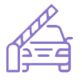

Solicitud de subsidios a la luz y gas
Solicitud de subsidios a la luz y gas Solicíta tu Símbolo Internacional de Acceso
Solicíta tu Símbolo Internacional de AccesoSi tenés un CUD o sos representante de una persona con discapacidad* podés tramitar el beneficio de libre tránsito y estacionamiento(derecho regulado por las normativas de tránsito de cada localidad o municipio)
*Sólo podrá efectuarlo el representante que hubiera realizado el trámite del CUD junto a la persona con discapacidad.

Solicitá la exención de pago de peajes para personas con discapacidad.Vialidad Nacional otorga, a través de las empresas concesionarias, la exención del pago de peajes de rutas nacionales concesionadas para personas con discapacidad.
Conocé más sobre el trámite de exención del pago de peajes para personas con discapacidad